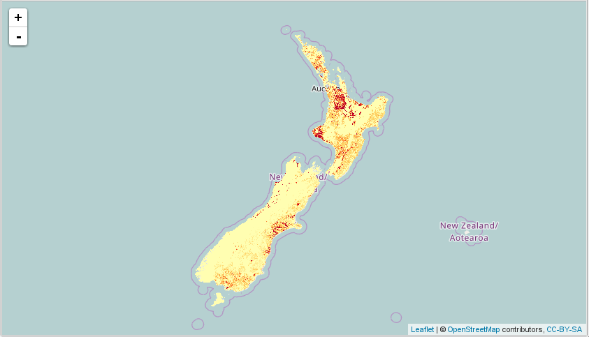

Overview
When making maps for display on the web, the size of the various objects being rendered can quickly become overwhelming. For example, a polygon feature class containing New Zealand Meshblocks, a set of roughly 40,000 mutually exclusive and exhaustive polygons, is more than 100MB when stored as a shapefile, but much larger uncompressed and rendered in a browser window.
There are various approaches one can take to attempt to deal with this issue, though useful solutions tend to depend on server-side processing. Essentially, one fetches and renders only as much data as is needed to populate the current viewport. One way of doing this is to use a tile server whereby a map is represented as a grid made of individual tiles, and each tile is an image which can be rendered and served on request. For example:
In this document we consider two main tools: Mapnik, which is used to render the individual tiles; and TileStache, which is used to serve the tiles.
Mapnik can render tiles dynamically, thus avoiding the need to cache all the required tiles in advance. Maps themselves are styled via an XML file which provides a good deal of control over map layout, and can be modified on demand.
Best of all, every tool used in this document is completely free. So, in principle, a production quality server could be created, with the only costs incurred being the cost of the host server itself. At current rates, a Linux instance with 2 cores and 8GB of RAM could be created on AWS with an annual cost of as little as $900.
Setting Things Up
The host in question here is a VirtualBox VM running 64-bit Debian Linux (Stretch), with 2 cores and 8GB of RAM assigned. The instructions will likely apply well enough to other Debian-based Linux distrubtions, such as Ubuntu. Users of other Linux distributions will probably be able to use the instructions here as a template.
It is possible to get things working on a Windows platform, albeit with slightly less functionality. However, my personal opinion is that it is much easier and more reliable on a Linux platform, and Linux is strongly recommended. Windows users can easily get up and running with Linux by creating a virtual machine, provided they have some RAM to spare. Oracle VM VirtualBox is a perfectly good option, and is also freely available.
Mapnik & TileStache
Both Mapnik and TileStache are in the standard repositories, so installing is as simple as:
sudo apt-get install libmapnik libmapnik-dev mapnik-utils python-mapnik tilestacheTileStache also required the Python imaging library. To install this:
sudo pip install -U PillowTesting the installation
For development purposes TileStache can be started via the tilestache-server
command, which causes TileStache to run on port 8080 by default.
When starting, tilestache-server looks for a file called tilestache.cfg, so
we create one as follows:
{
"layers":
{
"osm":
{
"provider": {"name": "proxy", "url": "http://tile.openstreetmap.org/{Z}/{X}/{Y}.png"}
}
}
}To start TileStache, run:
tilestache-server -c <path to config>/tilestache.cfgwhich will then make the server available at http://localhost:8080:

In this case, tiles from openstreetmap.org are available at
/osm/{z}/{x}/{y}.png:

uWSGI + Nginx Setup (optional)
The testing section above describes how one can run TileStache and Mapnik
together using the tilestache-server command, and is fine for development
purposes. However, for a more performant, robust solution, we instead use
WSGI.
There are a few options we could employ here, but we will use uWSGI to run TileStache, and NGINX to reverse proxy.
uWSGI
One of the easier ways to install uWSGI is to use pip:
sudo apt-get install python-pip
sudo pip install -U uwsgiNow, create a file called /etc/tilestache/tilestache-uwsgi.ini as follows
(note we have decided to use port 9090 rather than the default of 8080):
[uwsgi]
http-socket = :9090
eval = import TileStache; application = TileStache.WSGITileServer("/etc/tilestache/tilestache.cfg")Given this file, TileStache can then be started so that it is available at
http://localhost:9090 via:
uwsgi --ini /etc/tilestache/tilestache-uwsgi.iniStarting uWSGI automatically on boot
We might also want to set things up so that the service starts automatically
when the system is booted. Debian uses System V-style init. I’m not all that
experienced with this, but I got things working by creating
/etc/init.d/tilestache as follows:
#!/bin/sh
### BEGIN INIT INFO
# Provides: tilestache
# Required-Start:
# Required-Stop:
# Default-Start: 2 3 4 5
# Default-Stop: 0 1 6
# Short-Description: Start TileStache.
# Description: Start TileStache.
### END INIT INFO
DAEMON=/usr/local/bin/uwsgi
NAME="tilestache"
RUN_DIR=/var/run
PIDFILE=$RUN_DIR/tilestache.pid
case "$1" in
start)
printf "%-50s" "Starting $NAME..."
PID=`$DAEMON --ini /etc/tilestache/tilestache-uwsgi.ini > /dev/null 2>&1 & echo $!`
if [ -z $PID]; then
printf "%s\n" "Fail"
else
echo $PID > $PIDFILE
printf "%s\n" "done."
fi
;;
stop)
printf "%-50s" "Stopping $NAME..."
PID=`cat $PIDFILE`
if [ -f $PIDFILE ]; then
kill -HUP $PID
printf "%s\n" "done."
rm -f $PIDFILE
else
printf "%s\n" "no such process."
fi
echo "done."
;;
restart)
$0 stop
$0 start
;;
*)
echo "Usage: $0 {start|stop|restart}"
exit 1
;;
esac
exit 0and running:
sudo update-rc.d tilestache defaultsFor those unfamiliar with Linux, this also means the service can be stopped and restarted at will with commands like:
sudo service tilestache start
sudo service tilestache stop
sudo servcee tilestache restartUbuntu, and possily other Linux distributions, now uses upstart rather than
System V-like init. It’s a simpler process to set up, so the details are left
to the reader if this applies (typically, create /etc/init/tilestache.conf
rather than /etc/init.d/tilestache, where tilestache.conf makes use of much
simpler syntax–see upstart for details).
Note that uWSGI has something called
uWSGI Emperor. This
makes it possible to control multiple services from a single uWSGI instance–
just create ini files like tilestache-uwsgi.ini above. This certainly has
some appeal.
NGINX
If you don’t have NGINX, it can be installed as follows:
sudo apt-get install nginxTo give the service a nice endpoint, and potentially make it available
externally, we add the following to /etc/nginx/sites-available/default:
server{
...
location /tiles/ {
include uwsgi_params;
uwsgi_pass 127.0.0.1:9090;
}
...
}Apparently NGINX and uWSGI work together. I couldn’t quite figure this out, but it is, apparently, possible to do something like:
server{
...
location /tiles/ {
include uwsgi_params;
uwsgi_pass 127.0.0.1:9090;
}
...
}To test the config and restart NGINX, issue:
sudo service nginx configtest && sudo service nginx reloadAt this point, the service would now be availabe on a standard port at
http://localhost/tiles/ or http://<domain name>/tiles/ if the server is
available externally.

{kind=link}
{kind=link}
‘TileMill’
Setting up a Mapnik source for use with TileStache requires a Mapnik XML file, and these can be tricky to produce by hand; and iterative refinement is also cumbersome. So, it is also useful to install TileMill which provides a nice editor which can be used to create maps, and export the settings as a Mapnik XML file.
Installation
TileMill was originally produced by Mapbox, though it seems they no longer actively develop it (instead, they encourage the purchase of Mapbox Studio, which is excellent, but not free–enterprises and professionals might want to consider it). That said, the project has been forked, and active development is continuing. We choose a fork called TileOven. To install it:
cd ~/Downloads
git clone https://github.com/florianf/tileoven.git
cd tileoven
npm install
cd
sudo mv ~/Downloads/tileoven /usr/local/Of course, this means one must also have both git and node.js. To install git:
sudo apt-get install gitTo install a newer version of node than is in the repositories, run:
cd ~/Downloads
wget https://nodejs.org/dist/v6.9.1/node-v6.9.1-linux-x64.tar.xz
tar -xvf node-v6.9.1-linux-x64.tar.xz
sudo mv node-v6.9.1-linux-x64 /usr/local/node
echo "export PATH=$PATH:/usr/local/node/bin" >> ~/.bashrc
source ~/.bashrcTesting the installation
To run TileOven, issue:
/usr/local/tileoven/index.jsThen browse to http://localhost:9090 in a web browser and you’ll see something
like:

TileMill (local)
Accessing TileMill remotely
TileMill is currently built to work strictly locally. This makes it somewhat awkward to put it on a server and access it from a remote client. There are ways, though none is neccesarily ideal.
In one method, the variable listenHost can be set to match the server’s public
IP address in the file /usr/local/tileoven/lib/config.defaults.json. This is
far from secure.
Alternatively, we could rely on SSH tunneling. The TileMill UI runs on port 20009, and the tile server runs on port 20008; so we just need to forward these two ports to get access. On a system with a proper SSH client such as Linux, we can do something like:
ssh hostname -l username -L 20009:localhost:20009 20008:localhost:20008Then we would simply point our browser at http://localhost:20009 to get
access. From a security perspective, this isn’t necessarily an ideal option
either, however. On my machine, I created a user called gisuser and added
them to a group called gis. I then made sure this user had limited access,
and used this account to start the TileMill server.
Things are a bit trickier on a Windows platform since it doesn’t ship with an SSH client. Either way, we will describe how this can work using PuTTY. I installed using the installer found https://the.earth.li/~sgtatham/putty/latest/x86/putty-0.67-installer.msi.
Now, let’s assume we have a server running TileMill which can be accessed on a
network by the name debian, or by the IP address 192.168.20.22 (which is
true for my local network). We start PuTTY and enter either the hostname or
IP address as follows:
hostname
Then, navigate to Connection→SSH→Auth→Tunnels, and enter ports 20008 and 20009 as required:
tunnels
Click the connect button, and you will be asked to enter a username and, and a terminal will open as follows:
terminal
The terminal isn’t terribly important in this instance since we just want to
acces TileMill. Simply open a browser and point it at http://localhost:20009
as follows:
TileMill (remote)
This was done using a remote machine on the same local network as the TileMill server, but the same process applies over the web–just use the public IP or fully qualified name of the server. For further detail, see:
PostgreSQL / PostGIS
While we can render tiles directly from shapefiles and rasters, it is probably better to pull spatial data from a spatially enabled database. PostgreSQL is a high quality, enterprise ready relational database management system which is freely available; and PostGIS is an extender which adds spatial capabilities. We will describe how to install these products, as well as populate tables from shapefiles and rasters.
Install PostgreSQL and PostGIS
To install PostgreSQL and PostGIS, simply run:
sudo apt-get install postgresql postgis odbc-postgresqlThe last package, odbc-postgresql, is not strictly necessary, but it will
often be useful to access Postgres via ODBC, and this package provides the
necessary driver. If you would also like a JDBC driver, you can do:
sudo apt-get install libpostgresql-jdbc-javaCreate a spatially-enabled database
We create a single database called gis, and we grant read access to a user
called gisuser with the creative password password. It makes sense to
group spatial data into collections by creating schemas as appropriate. In
this case, we create a schema called geography in which we place standard
geographies (meshblock, Area Unit, Territorial Authority, and Regional
Council) as multipolygons. Similarly, we cteate a schema called raster in
which we will place all raster data.
To gain access to an interactive SQL shell as root:
sudo -u postgres psqlAnd to create the database, run the following:
CREATE DATABASE gis;
\c gis
CREATE EXTENSION postgis;
CREATE EXTENSION postgis_topology;
CREATE SCHEMA geography;We can confirm the spatial extensions are present as follows:
sudo -u postgres psql -U postgres -d gis -c "SELECT postgis_version()"which should return something like:
postgis_version
---------------------------------------
2.1 USE_GEOS=1 USE_PROJ=1 USE_STATS=1
(1 row)Finally, we give access to the data to user gisuser as follows:
CREATE USER gisuser WITH ENCRYPTED PASSWORD 'password';
GRANT CONNECT ON DATABASE gis TO gisuser;
GRANT USAGE ON SCHEMA geography TO gisuser;
GRANT USAGE ON SCHEMA raster TO gisuser;
GRANT SELECT ON ALL TABLES IN SCHEMA geography TO gisuser;
GRANT SELECT ON ALL TABLES IN SCHEMA raster TO gisuser;Note that PostGIS supports rasters, but as far as I can tell, TileMill and Mapnik cannot read PostGIS rasters. So, we won’t bother loading any rasters to PostGIS here, and will instead just reference the GeoTIFF files directly.
Populate the database
It is then relatively easy to load data into the database. To load the
shapefile <path>/MB2013.* into the database, for example:
shp2pgsql -I -s 2193 <path>/REGC2013.shp geography.REGC2013 | \
sudo -u postgres psql -U postgres -d gisAnd that’s it! Again, we can conduct some simple checks. For example, the
average area of a meshblock can be calculated by appealing to the ST_Area
function as follows:
psql -U gisuser -d gis \
-c "SELECT sum(ST_Area(geom)) / sum(1) as ave_area FROM geography.MB2013"which, after being prompted for a password, returns:
ave_area
------------------
5829825.22609488
(1 row)Serving Tiles
The basic process we will use for deploying tiles will be to first create and style a map in TileMill, then export to Mapnik XML. The Mapnik XML file is referenced from a TileStache configuration, making it available as a tile server.
We will demonstrate how to add polygon features from both shapefiles and from
PostGIS, and rasters from GeoTIFFs. For the purpose of this document, we have
sourced features and saved them to /usr/local/tileoven/data as follows:
MB2013/MB2013.shpAU2013/AU2013.shpTA2013/TA2013.shpREGC2013/REGC2013.shpriver/river-environment-classification-catchment-order-6-2010.shpnitrogen/Nitrogen_Leaching_20150903.tif
In additions, each of the shapefiles is also stored in a PostGIS database
called gis, schema geography.
For convenience all these files have been placed in the following GitHub repostiory:
Shapefiles
Let’s start with the river shapefile. In the TileMill UI, select ‘Projects’ from the sidebar, and then click the ‘+ New project’. Fill in the resulting dialog as follows:
river - create project
The default map canvas will contain a modestly styled countries feature class
which you can safely delete–click the layers control
( ), hover over
), hover over #countries, and click delete
( ).
).
Next, click the ‘+ Add layer’ button, and fill in the resulting dialog as in the following screenshot, before clicking the ‘Save & Style’ button:

river - add layer
Now edit the style.mss tab so it contains:
Map {
background-color: transparent;
}
#river {
line-color:#594;
line-width:0.5;
polygon-opacity:1;
[Tot_reach >= 0]{ polygon-fill:#EFF3FF; }
[Tot_reach >= 3000]{ polygon-fill:#BDD7E7; }
[Tot_reach >= 6000]{ polygon-fill:#6BAED6; }
[Tot_reach >= 9000]{ polygon-fill:#3182BD; }
[Tot_reach >= 12000]{ polygon-fill:#08519C; }
}Upon clicking the save button, the map should update and (after a little panning and zooming) looks as follows:
river - final map
To serve a map like this via TileStache, save style.mss as a Mapnik XML file
by clicking the Export button and selecting ‘Mapnik XML’. Save the file as
/etc/tilestache/river.xml. Then, edit /etc/tilestache/tilestache.cfg to
include a river layer as follows:
{
"cache":
{
"name": "Disk",
"path": "file:///tmp/cache",
"umask": "0000",
"dirs": "portable"
},
"layers":
{
"river":
{
"provider": {"name": "mapnik", "mapfile": "river.xml"}
},
...
}
}This newly created layer should now be accessible via
<base>/river/{z}/{x}/{y}.png. As described above, I set TileStache to be
accessible via http://localhost/tiles. The leaflet package in R provieds us
with a convenient way of testing things are working:
library(leaflet)
leaflet(width="100%", height=500) %>% addTiles() %>%
fitBounds(166.70047, -34.45676, 178.52966, -47.06345) %>%
addTiles(urlTemplate = "http://localhost/tiles/river/{z}/{x}/{y}.png")
(Of course, you get a live preview of the tiles in TileMill, but we want to confirm that we can server these via TileStache. That is, we want to confirm that we can access the tile server remotely with a ‘Google Maps-style URL’.)
PostGIS
Now that we’re familiar with the general layout, we’ll be a little lighter on
detail. This time, create a project called composite and, as before, delete
the default countries layer.
We will add each of MB2013, AU2013, TA2013, and REGC2013 from PostGIS tables, though it would be just as easy to add them via shapefiles. They are all entered the same way, so we show the setup for just the one, MB2013, as follows:

After all 4 layers are added, edit style.mss so it contains the following:
Map {
background-color: transparent;
maximum-extent: "-19691655, -5989537, 19879128, -4081645";
}
#MB2013 {
::shape{
[zoom >= 15]{
line-color:#000000;
line-width:0.5;
line-opacity: 1;
polygon-opacity: 0;
polygon-fill: transparent;
}
}
::label{
[zoom >= 15]{
text-name: [code];
text-face-name: 'Arial Black Regular';
text-fill: #036;
text-size: 9;
text-halo-fill: fadeout(white, 30%);
text-halo-radius: 2.5;
text-avoid-edges: false;
text-allow-overlap: true;
text-placement: interior;
}
}
}
#AU2013 {
::shape{
[zoom >= 12][zoom < 15]{
line-color:#000000;
line-width:0.5;
line-opacity: 1;
polygon-opacity: 0;
polygon-fill: transparent;
}
}
::label{
[zoom >= 12][zoom < 15]{
text-name: [label] + "\n(" + [code] + ")";
text-face-name: 'Arial Black Regular';
text-fill: #036;
text-size: 9;
text-halo-fill: fadeout(white, 30%);
text-halo-radius: 2.5;
text-avoid-edges: false;
text-allow-overlap: true;
text-placement: interior;
}
}
}
#TA2013 {
::shape{
[zoom > 9][zoom < 12]{
line-color:#000000;
line-width:0.5;
line-opacity: 1;
polygon-opacity: 0;
polygon-fill: transparent;
}
}
::label{
[zoom > 9][zoom < 12]{
text-name: [label] + "\n(" + [code] + ")";
text-face-name: 'Arial Black Regular';
text-fill: #036;
text-size: 9;
text-halo-fill: fadeout(white, 30%);
text-halo-radius: 2.5;
text-avoid-edges: false;
text-allow-overlap: true;
text-placement: interior;
}
}
}
#REGC2013 {
::shape{
[zoom >= 0][zoom <= 9]{
line-color:#000000;
line-width:0.5;
line-opacity: 1;
polygon-opacity: 0;
polygon-fill: transparent;
}
}
::label{
[zoom >= 0][zoom <= 9]{
text-name: [label];
text-face-name: 'Arial Black Regular';
text-fill: #036;
text-size: 9;
text-halo-fill: fadeout(white, 30%);
text-halo-radius: 2.5;
text-avoid-edges: false;
text-allow-overlap: true;
text-placement: interior;
}
}
}As before, ws export to Mapnik XML and save as /etc/tilestache/composite.xml,
and edit /etc/tilestache/tilestache.cfg to inculde the new layer:
{
"cache":
{
"name": "Disk",
"path": "file:///tmp/cache",
"umask": "0000",
"dirs": "portable"
},
"layers":
{
...
"composite":
{
"provider": {"name": "mapnik", "mapfile": "composite.xml"}
}
}
}I won’t profess to being very artistic here, but this map will show regional council areas (REGC2013) when zoomed out, and will change to display more detailed classifications as we zoom in. Again, it is easy to view the map in R:
library(leaflet)
leaflet() %>% addTiles() %>%
fitBounds(166.70047, -34.45676, 178.52966, -47.06345) %>%
addTiles(urlTemplate = "http://localhost/tiles/composite/{z}/{x}/{y}.png")


Rasters
Finally, create a new project called nleach, and add the
Nitrogen_Leaching_20150903.tif as follows:
Then edit style.mss as follows:
Map {
background-color: transparent;
}
#nleach {
raster-opacity:1;
raster-colorizer-default-mode: linear;
raster-colorizer-default-color: transparent;
raster-colorizer-stops:
stop(-0.000005, #FFFFB2)
stop(13.402771, #FECC5C)
stop(26.805547, #FD8D3C)
stop(40.208324, #F03B20)
stop(53.611100, #BD0026);
}Export to Mapnik XML and save as /etc/tilestache/nleach.xml. Then add the
layer to /etch/tilestache/tilestache.cfg:
{
"cache":
{
"name": "Disk",
"path": "file:///tmp/cache",
"umask": "0000",
"dirs": "portable"
},
"layers":
{
...
"composite":
{
"provider": {"name": "mapnik", "mapfile": "composite.xml"},
"projection": "spherical mercator"
}
}
}Again, we can visualise the result in R:
library(leaflet)
leaflet() %>% addTiles() %>%
fitBounds(166.70047, -34.45676, 178.52966, -47.06345) %>%
addTiles(urlTemplate = "http://localhost/tiles/nleach/{z}/{x}/{y}.png")